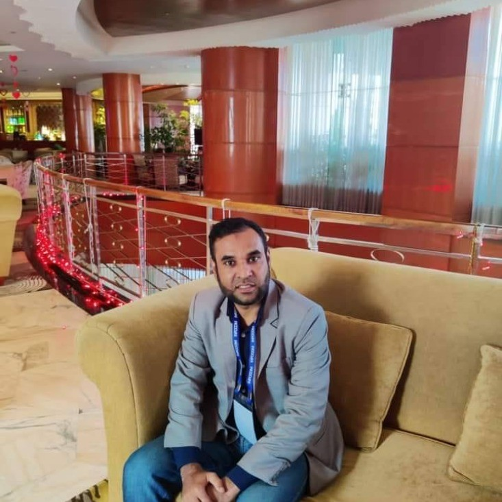

Our Team

Mominul Hoque
IT Consultant & Infrastructure Specialist
14+ years of experience in system administration, cybersecurity, cloud architecture, and enterprise infrastructure. Delivers secure, scalable, and high-availability IT solutions.
Network Engineers
Corporate Network & Security Specialists
Certified professionals experienced in routing, switching, VoIP, firewall management, secure connectivity, and enterprise-grade network design.
Cloud & DevOps Engineers
AWS | Azure | Docker | Kubernetes
Experts in CI/CD automation, cloud deployment, container orchestration, and scalable DevOps workflows for modern digital platforms.